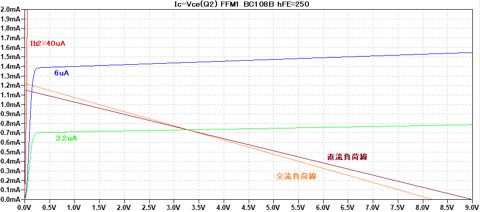
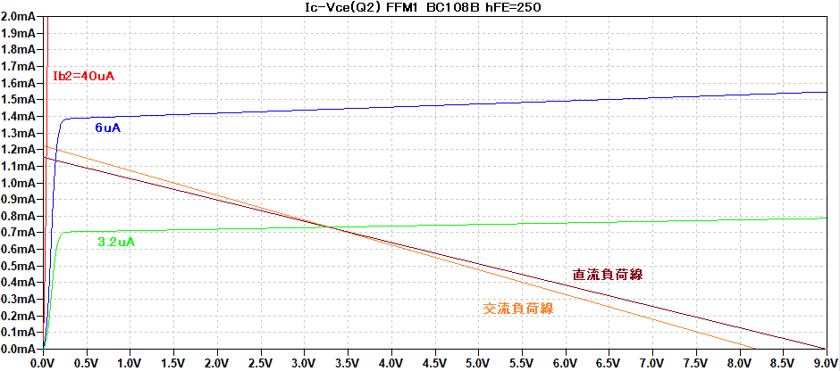
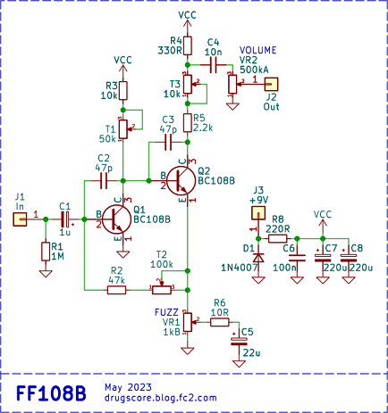

FF108B & FF1815（FFM1風ファズフェイス）
2023年06月23日 カテゴリー：自作エフェクター（アナログ）
Jim Dunlop SILICON FUZZ FACE MINI（FFM1）はトランジスタが選別されていたわけですが、個人で大量にトランジスタを買って選別するというのはあまり現実的ではありません。今回は無選別のBC108Bや2SC1815-GRを使ってファズフェイスを製作し、FFM1の音に近づけられるのかどうか検証してみます。
現在手に入りやすいトランジスタは、hFEが250より高いものだと思います。各トランジスタで動作点をシミュレーションすると以下のようになります。
＜BC108B hFE=250＞（FFM1解析の再掲載）

 
＜BC108B hFE=400＞
＜2SC1815-GR hFE=300＞
抵抗値がそのままだと、基準となる電圧がFFM1からズレることが分かります。このズレを修正し音質を補正するため、可変抵抗（トリマー）を設けます。いわゆるバイアス調整です。
▽回路図

回路は普通のファズフェイスです。FF1815ではトランジスタを2SC1815-GR（JCET製）に置き換えています。シリコントランジスタを使っている場合、一般的な定数で製作してもそこまで破綻した音になるということはないようです。
T1はQ1での歪み方を調整できます。ただ、Q1では元々かなり偏ったクリッピングになっている（FFM1解説参照）ので、音質変化はややわかりにくいです。R3+T1を22k～33kΩ程度の固定抵抗としてもよいでしょう。
T2でもQ1での歪み方やゲインが変化しますが、他のトリマーの設定が定まらなくなる原因になりがちです。結局ほとんど調整せず、R2+T2を100kΩとしています。
T3はQ2の動作点を調整できます。クリッピングの対称性、倍音構成が変わるということになります。ゲルマニウムトランジスタを使ったファズフェイスでは、Vc2が4.5Vになるように調整するとされていることがあります。もちろん、好きな音色になるよう自由に設定して問題ありません。
▽周波数特性（VOLUME 100% FUZZ 100%）
高音域が微妙に違っています。C2やC3を微調整することにより、もっと近づけることもできるかもしれません。
【バイアス調整】
FFM1ではVc1=1.34V Vc2=4.12Vだったので、単純に考えるとバイアス電圧をこれと同じにするとよさそうです。実際やってみると、同じ歪率の時の倍音構成は近くなります。しかし、同じ音量を入力した場合hFEが高い方がゲインが高く歪みやすいので、同じ動作にはなりません。FUZZコントロールを下げたり、入力に抵抗を入れることでゲインを下げることもできますが、そうすると微妙に周波数特性が変わってしまいます。結論としては、hFEを同じにしないと厳密に同じ音にすることはできないということになります。
以下は歪率や倍音構成がFFM1に近づくように調整し、測定したものです。hFEにより最適な調整値は変わってくるため、あまり参考にならないかもしれません。
＜FFM1 hFE(Q1)=247 hFE(Q2)=245 Vc1=1.34V Vc2=4.12V＞
＜FF108B hFE(Q1)=303 hFE(Q2)=312 Vc1=1.39V Vc2=4.33V R2+T2=100kΩ＞
＜FF1815 hFE(Q1)=306 hFE(Q2)=305 Vc1=1.35V Vc2=4.35V R2+T2=100kΩ＞
個人的にはそれぞれかなり近い音で、判別するのは困難だと感じました。